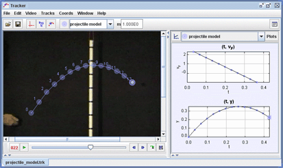

Here a dynamic model of a simple projectile is compared with the tossed ball. What forces does the model define? What initial conditions? How well does the model behavior match that of the real ball?
